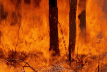
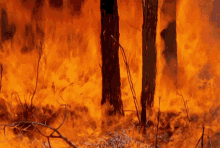
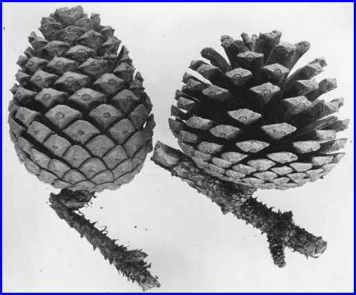
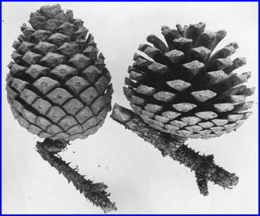

How the nature adapts
Wildfire impacts and fire-exclusion policies vary widely (Smith and Fischer 1997). Much attention focuses on dense small tree growth and its influence on fire severity, particularly in drier ecosystems. However, this doesn't universally hold true for wetter, colder forests in the northern Rockies and Pacific Northwest, nor non-forested regions. Historical fire frequency differs based on vegetation type. Ecological effects of suppression policies since 1911 also vary by vegetation.

 

Dry coniferous forests, previously untouched by fire due to management practices like timber production and grazing, now exhibit altered tree density and composition, increasing the fuel concentration. This elevates the risk of intense wildfires, attributed to reduced spacing and higher fuel levels. Images to consider:


Subalpine forests, distinct from dry forests, span vast elevated regions and consist mainly of subalpine fir, lodgepole pine, Engelmann spruce, and whitebark pine. These higher-elevation forests experience increased moisture and cold. While certain conifers within these forests are susceptible to moderate-intensity fires, lodgepole pine, a dominant species, thrives after wildfires due to its unique reproductive mechanism. The cones of lodgepole pine are serotinous, sealed with resin that melts at fire temperatures (113-140 °F), releasing seeds and facilitating post-fire regeneration.

 

Wildlife's strategies against forest fires include habitat selection, physiological traits, and camouflage. Animals prefer landscapes with varying vegetation types, seek refuge in less fire-prone areas, and use flight or burrowing to escape. Camouflage aids them in evading predators during fires, highlighting the interaction between ecology, evolution, and nature's forces.
After a forest fire, a dynamic recovery unfolds in the animal kingdom, including resilient eggs, seeds, and dormant life stages. Insects, amphibians, and certain plants endure fires, awaiting optimal conditions for growth. These hardy organisms lay the groundwork for ecosystem restoration, bolstering biodiversity. Some animals engage in post-fire foraging, opportunistic scavengers exploiting charred remains, and predators preying on weakened or displaced creatures. Early successional stages post-fire offer a haven for herbivores and their carnivorous counterparts. Adaptations emerge as animals adjust routines to the transformed landscape, with increased nocturnal activity and shifted movement patterns. Cooperative behaviors aid survival, facilitating fire threat information sharing, evacuation, and communal protection. This intricate web of responses underscores the profound wildlife-fire relationship shaping ecosystems in unique ways.